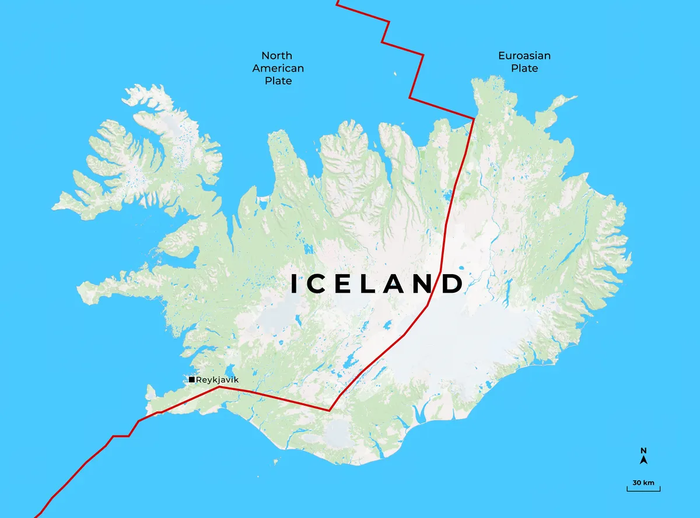
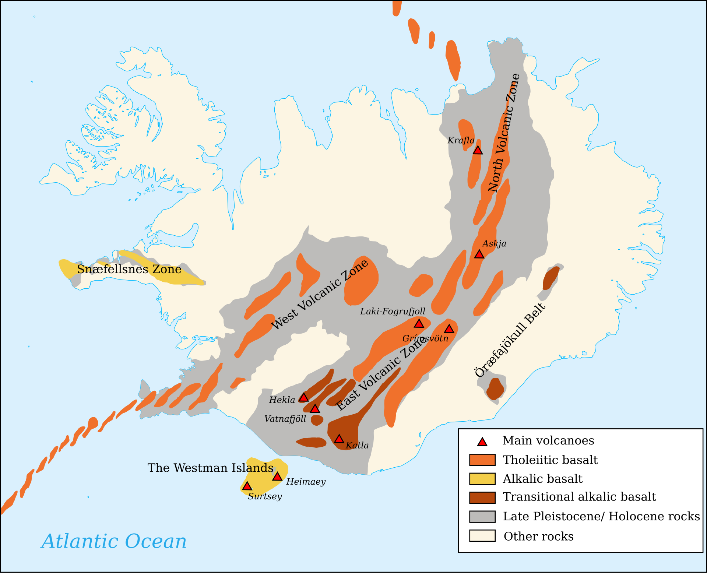

Born Between Two Continents
Iceland was created in a unique tectonic position where the North American and Eurasian tectonic plates are diverging at approximately 2 centimetres per year. This boundary forms part of the Mid-Atlantic Ridge, a 10,000-kilometre mountain chain created by seafloor spreading. In most parts of the Atlantic Ocean, this process remains hidden beneath thousands of metres of water. Iceland, however, rises above the ocean due to an additional source of magma supplied by a mantle plume, commonly referred to as the Iceland hotspot.
The combination of plate divergence and elevated mantle temperatures causes increased volcanic activity. As the tectonic plates separate, fractures develop within the crust, allowing basaltic magma to reach the crust surface, continuously creating new crust.

Iceland's volcanic rocks are made of basalt, an iron- and magnesium-rich igneous rock produced from low-viscosity magma. Basaltic magma typically erupts effusively (slowly) rather than explosively, producing extensive lava flows that gradually build broad volcanic landscapes.
Over the past 20 million years, repeated eruptions have constructed the island almost entirely from volcanic material. Iceland contains around 30 active volcanoes, fissure swarms, and magma storage regions. Most eruptions occur along long fractures rather than from a single volcanic cone.One of the most significant modern eruptions occurred in 2014–2015 at Holuhraun, where a fissure eruption produced approximately 1.6 cubic kilometres of lava. More recently, the Reykjanes Peninsula has entered a new phase of volcanic activity after several centuries of dormancy, demonstrating that Iceland's geology continues to evolve on human timescales.
Fire and Ice
Another interesting feature of Iceland is the interaction between volcanoes and glaciers. Around 10% of the country is covered by ice, and several volcanoes lie beneath these glaciers. When an eruption occurs below the ice, large quantities of meltwater are produced. This can lead to sudden glacial outburst floods, known as jökulhlaups, which are capable of transporting huge amounts of sediment and causing significant damage downstream. The 1996 eruption beneath the Vatnajökull ice cap is a well-known example, as the resulting flood destroyed roads and bridges while reshaping parts of the surrounding landscape.

Iceland's Volcanic Zones
Volcanic activity in Iceland is not evenly distributed across the island. Instead, it's concentrated into several volcanic zones that tell us about the movement of the tectonic plates and the influence of the Iceland hotspot. The main areas of activity are found along the Northern and Eastern Volcanic Zones, showing us exactly where the North American and Eurasian plates are pulling apart.
These rift zones are responsible for producing large amounts of magma as the crust stretches and fractures. Many of Iceland's most active volcanoes, including Hekla, Katla and Krafla, are located within these rift zones. Eruptions often occur along fissures rather than a single volcanic vent, creating extensive lava fields across the landscape.
As shown in Figure 2, the chemistry of Iceland's volcanic rocks also changes across the island. Most eruptions produce tholeiitic basalt, which form directly above spreading centres where the rising mantle material melts as pressure decreases. This type of basalt is low in silica and produces those effusive, fluid lava flows that can cover large areas.Further away from the main rift zones, transitional alkalic basalt is more common. These lavas are influenced more strongly by the Iceland hotspot and have a slightly different chemical composition due to variations in how the magma forms and travels through the crust.
“Few parts of the earth's surface possess so strange a fascination, at once attractive and repellent…” — Archibald Geikie, Iceland (1902)
Iceland is one of the few example of Earth's internal processes being exposed on the surface. Gradual movement of tectonic plates, rising magma from the mantle, and the interaction between volcanoes and glaciers have continuously reshaped the island over millions of years. Unlike many rifting systems that are hidden beneath the oceans or deep underground, Iceland allows volcanologists to observe these processes as they happen.
Iceland is not simply a landscape shaped by past events; it is still actively developing today. New volcanic eruptions, earthquakes and geothermal activity provide valuable information about how the planet is working beneath our feet. By studying Iceland, geologists can better understand plate tectonics, volcanic hazards and the long-term evolution of Earth's crust.
The island's dramatic landscape is a reminder that the Earth is constantly changing. Mountains are built from the build up of lava, crust is created from the drag forces pulling the continents apart, and landscapes are transformed through processes over millions of years. Iceland represents a unique connection between Earth's deep interior and its surface, making it one of the most important locations for understanding the geological dynamics of our planet.